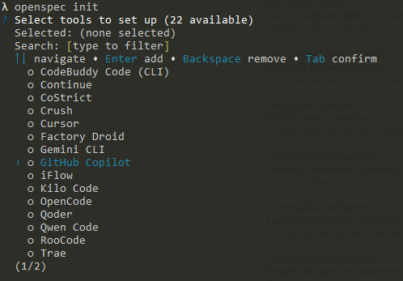
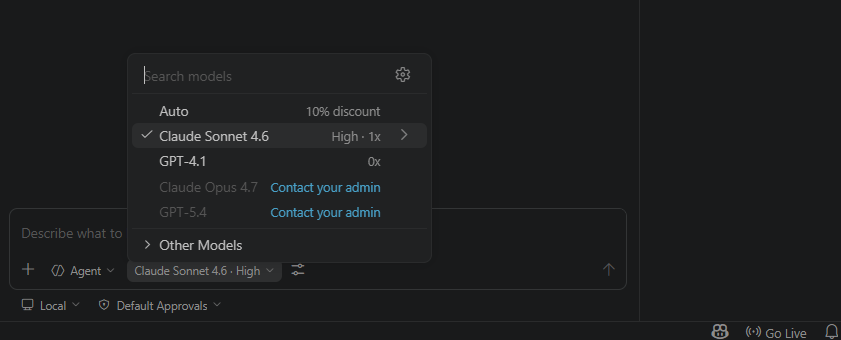

Gestión de clientes (modelo con licencia)
Warning
Esta sección se encuentra en desarrollo 🚧.
NO se recomienda realizarla a menos que te lo hayan indicado expresamente.
Punto de partida
Si has llegado hasta aquí, entiendo que ya has leído tanto la introducción como la instalación del entorno. A partir de ahora voy a dar por hecho que partimos todos desde el mismo punto y que tenemos ya la estructura de directorios creada y los proyectos descargados.
Dicho esto, nos vamos a la consola (o desde el terminal de tu IDE), nos situamos en el directorio raíz y lanzamos el inicializador de OpenSpec.
openspec init
Seleccionamos GitHub Copilot, pulsamos Enter para añadirlo y después Tab para validar la selección.

Esto instalará las plantillas necesarias para poder trabajar con OpenSpec + GitHub Copilot.
Requisitos funcionales
- CRUD de clientes.
- Entidad cliente con
idyname. - Listado simple sin filtros ni paginación.
- Alta/edición en modal.
- El nombre es el único campo editable.
- No se permite guardar clientes con nombre duplicado.
Estrategia del modo con licencia
Vamos a trabajar con un modelo de pago, por lo que es importante entender qué ventajas nos ofrece frente al modelo gratuito.
En este caso podremos:
- Trabajar con mayor contexto
- Analizar frontend y backend simultáneamente
- Reducir la fragmentación de tareas
- Obtener propuestas e implementaciones más completas y robustas
El modelo que utilizaremos será Claude Sonnet 4.6. Para ello debes:
- Tener una cuenta premium con acceso a modelos de pago
- Hacer login con tu cuenta de GitHub
- Activar GitHub Copilot
- En el chat, abrir el tercer desplegable
- Seleccionar el modelo Claude Sonnet 4.6

En cualquier momento puedes ver el consumo mensual de tu cuenta pulsando el icono de la rana 🐸 en la esquina inferior derecha. El contador se reinicia cada mes.
Vamos a abordar el ejercicio como un único bloque de trabajo, analizando y construyendo la funcionalidad de forma simultánea en backend y frontend.
De esta manera aprovechamos el mayor contexto del modelo de pago, permitiendo:
- Analizar
backendyfrontendal mismo tiempo - Diseñar la funcionalidad de forma coherente en ambas capas desde el inicio
Esto nos permite mantener una visión global del sistema durante todo el proceso y reducir la necesidad de dividir artificialmente el trabajo en fases independientes por capa.
Además, recuerda que el comportamiento del modelo no es determinista. Si a ti te genera algo diferente a lo que ves aquí, probablemente seguirá siendo válido. No te frustres y ajusta los prompts si es necesario.
Flujo de trabajo OpenSpec
Seguiremos el ciclo completo de OpenSpec:
1. Explore
2. Propose
3. Apply
4. Archive
Explore
El objetivo de esta fase es analizar el sistema existente, sin modificar nada.
Buscamos:
- Entender la estructura actual de la aplicación
- Identificar patrones y estructuras reutilizables
- Comprender cómo se comunican frontend y backend
Aspectos a revisar:
Organización por dominios
- Cómo están estructurados los dominios existentes (category, author, game…)
- Qué carpetas existen en frontend y backend
- Cómo se relacionan los dominios entre capas
Angular
- Componentes
- Servicios
- Modelos
- Routing
Spring Boot
- Controller
- Service
- Repository
- Entity
- DTO
Patrón CRUD
- Cómo se implementan los listados
- Cómo se implementan las operaciones de creación, edición y borrado
- Cómo funcionan las ventanas de creación y edición (modales)
Conexión frontend-backend
- Cómo Angular llama a los endpoints
- Cómo se construyen las URLs
- Qué DTOs se utilizan en la comunicación
Reutilización
- Código común entre dominios
- Patrones repetidos
- Estructuras compartidas entre diferentes funcionalidades
⚠️ En esta fase:
- NO se escribe código
- NO se diseña la solución
- NO se inventan estructuras nuevas
Solo se analiza el sistema actual.
📜 Prompt
Lo que haremos será escribir en el chat de Visual Studio Code el comando y las instrucciones que queramos darle. Recuerda haber elegido Claude Sonnet 4.6 y estar trabajando en modo Agent.
En este caso, hemos añadido las carpetas del proyecto frontend y backend al contexto, por lo que el análisis se realizará sobre el sistema completo.
Para ello, desde el propio Chat de Copilot, pulsando el botón “+”, puedes seleccionar y añadir tanto archivos individuales como directorios completos del proyecto. También es posible añadirlos arrastrándolos directamente al chat.

/opsx:explore
Analiza el proyecto actual (Angular 17 + Spring Boot) que se ha añadido al contexto. Una vez analizado, responde:
1. ¿Cómo están implementados los CRUD existentes?
- Backend: Controller, Service, Repository
- Frontend: componentes, servicios y modelo
2. ¿Qué estructura siguen los dominios en backend y en frontend?
3. ¿Cómo se implementan las operaciones?
- Listado
- Creación/edición
- Borrado
- Cómo funcionan las ventanas de creación y edición (modales)
4. ¿Cómo se comunican frontend y backend?
- Servicios Angular
- Construcción de URLs
5. ¿Qué patrones o estructuras comunes se repiten en los CRUD existentes?
- Clases reutilizables
- Lógica repetida
- Estructuras comunes entre dominios
NO propongas soluciones.
NO diseñes nuevas funcionalidades.
Solo analiza el sistema actual.
Este comando realizará un análisis exhaustivo de tu sistema que servirá como base para definir la nueva funcionalidad en la siguiente fase.
Sobre los permisos
Es posible que durante el análisis te pida permiso para hacer ciertas tareas. Le puedes ir dando permiso una a una o darle permiso en todo el workspace, eso lo dejamos a tu elección.
En cualquier momento puedes ver el consumo de la ventana de contexto para saber si todo el conocimiento del sistema está en memoria o no. En el icono de la gráfica circular que está situada en la parte inferior derecha del chat.

Propose
Una vez analizado el sistema en la fase Explore, el siguiente paso es definir de forma clara y estructurada la nueva funcionalidad a implementar.
En esta fase establecemos qué vamos a construir, basándonos estrictamente en el resultado del Explore y aprovechando que el modelo dispone de una visión completa del sistema (frontend y backend).
Esta fase actúa como puente entre el análisis y la implementación, permitiendo diseñar la solución antes de escribir código y reduciendo el riesgo de errores durante el desarrollo.
Durante esta fase debes especificar:
Descripción funcional
- Qué hace la funcionalidad
- Qué problema resuelve
Reglas de negocio
- Validaciones
- Restricciones
- Comportamientos esperados
Diseño backend
- Endpoints necesarios
- Estructura del dominio (Entity, DTO, Service, Repository)
- Tipo de operaciones (listado, creación, edición, borrado)
Diseño frontend
- Componentes necesarios
- Flujo de usuario (listado, abrir modal, guardar, borrar)
- Servicios Angular
Decisiones técnicas
- Qué patrones existentes se reutilizan
- Qué se mantiene igual que en otros dominios
- Qué diferencias introduce esta funcionalidad
Plan de implementación
- Tareas ordenadas
- Separación backend / frontend
Aquí dejamos claro:
- Qué funcionalidad se va a añadir
- Qué reglas de negocio existen
- Qué piezas del sistema se ven afectadas
- Qué tareas habrá que ejecutar
⚠️ En esta fase:
- NO se implementa código
- NO se redefine el sistema
📜 Prompt
Recuerda que seguimos trabajando en modo Agent, con las carpetas del proyecto frontend y backend añadidas al contexto.
Para nuestro ejemplo, lo que haremos será escribir en el chat de Visual Studio Code el siguiente prompt:
/opsx:propose client
Define la funcionalidad de gestión de clientes basándote en el sistema actual (Angular 17 + Spring Boot) y en los patrones identificados en la fase Explore.
Requisitos funcionales:
- Se necesita un CRUD de clientes
- Un cliente solo tiene: id, name
- El listado será simple, sin filtros ni paginación
- Existirá un formulario de alta / edición en modal
- El único campo editable será el nombre
- No se puede crear un cliente con un nombre ya existente (validación obligatoria)
Define:
1. Descripción de la funcionalidad
2. Reglas de negocio
3. Diseño backend:
- Endpoints necesarios
- Estructura del dominio (Entity, DTO, Service, Repository)
4. Diseño frontend:
- Componentes necesarios
- Flujo de interacción (listado, abrir modal, guardar, borrar)
5. Decisiones técnicas:
- Qué patrones del sistema actual se reutilizan
NO implementes código.
NO analices de nuevo el proyecto.
Basa la propuesta en los patrones detectados en la fase Explore.
Este comando debe generar una propuesta en changes con los artefactos proposal, design, spec y tasks.
Si necesitas recordar el papel de cada artefacto, revisa la introducción.
Responsabilidades como developer IA
En este punto la IA te ha hecho una propuesta que puede ser correcta o no, recordemos que se trata de un modelo matemático-probabilístico. Si hay algo de lo propuesto que no te encaja o es erróneo deberías comentarlo mediante el chat o corregirlo de forma manual en el fichero que corresponda. Por ejemplo si quieres añadir una tarea porqué se te ha olvidado incluirla en el prompt original, deberías decirle al modelo que te incluya la nueva tarea.
Una vez estemos de acuerdo con la propuesta que nos ha hecho la IA, podemos pasar al siguiente punto.
Apply
Una vez validada la propuesta, ejecutamos la implementación:
El objetivo de esta fase es transformar los artefactos generados
(proposal.md, design.md, spec.md, tasks.md) en código funcional, asegurando que:
- Se respetan los requisitos funcionales definidos en
spec.md - Se siguen las decisiones técnicas establecidas en
design.md - Se ejecutan las tareas en el orden definido en
tasks.md
📜 Prompt
Esto es tan fácil como escribir en el chat de Visual Studio Code el siguiente prompt:
/opsx:apply
El agente empezará a realizar un montón de tareas y pedirnos permisos. Es posible que algunas de esas tareas fallen y él mismo lo reintente de otra forma. El resultado debería ser el código generado e implementado tanto en la carpeta backend como en la carpeta frontend y un resumen de todas las tareas realizadas y checkeadas por la IA.
Verificación
Un paso que no pertenece a OpenSpec pero que es altamente recomendable es probar los cambios realizados.
Arranca el backend y el frontend y verifica:
- La aplicación levanta correctamente
- Las nuevas funcionalidades añadidas están accesibles
- Los flujos principales definidos en
spec.mdfuncionan como se espera
Ojo no te fies
Ojo no te fies de todo lo que construya la IA. Tu estás al mando, tu debes decidir si el sistema está correctamente implementado o no. Es tu responsabilidad.
Si NO estás a gusto con la implementación o se ha dejado algo por hacer, es el momento de escribirlo por el chat indicándole exactamente que es lo que falta. Cuanto más preciso y conciso seas, mejor implementará la IA.
Archive
Y llegamos a la última etapa que nos define OpenSpec, donde se archiva el cambio y se da por finalizada la funcionalidad.
El objetivo de esta fase es marcar la funcionalidad como completada, consolidar todos los artefactos generados durante el proceso y dejar el sistema en un estado estable, coherente y preparado para nuevas evoluciones.
En esta fase se asegura que:
- La funcionalidad ha sido correctamente implementada y validada
- No existen incidencias críticas pendientes
- La documentación asociada al cambio está completa y actualizada
- Existe una trazabilidad entre requisitos, diseño e implementación
Aunque parezca mentira, este paso es muy importante ya que nos servirá para actualizar el contexto del sistema y archivar todos los cambios para futuras consultas.
📜 Prompt
De nuevo nos vamos al chat de Visual Studio Code el siguiente prompt:
/opsx:archive
En este punto el sistema pedirá confirmación para sincronizar requisitos antes de archivar.
Sincronizar es obligatorio si quieres mantener trazabilidad entre lo implementado y los specs oficiales.